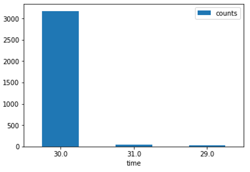
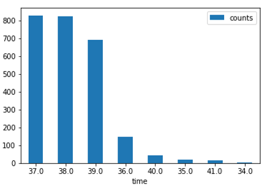
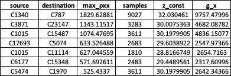

Botnet Detection Algorithm
A botnet detection algorithm developed using Fourier analysis and data from the Los Alamos National Laboratory for cybersecurity work.
Abstract
The objective of this algorithm is to identify highly periodic edges from network logs at scale which are likely to be part of the beginning of a botnet attack. This algorithm’s main strategy is detecting C2 traffic, which is a precursor to a botnet attack. This behavior is needed for the bot to: - 1) update their data, 2) receive commands, 3) send keep-alive messages. The behavior is observed when looking at the transport port of the of the bot for its C2 communication.
Research based on:
Method
Compute periodogram which identifies the peak of the frequency domain of the discrete time series traffic signal. After peak is located, Walker’s large sample test is applied to confirm that the peak is significant enough compared to the rest of the periodogram’s ordinates. We compute the peak and confirm with Walker’s test for different discrete time intervals. The peak of the frequency domain is obtained by computing the power spectral density of the network traffic which can be estimated using the Fourier transform of the autocorrelation function or a periodogram. The periodogram of a time sequence gives its power at different frequencies.
We used LANL dataset to validate this algorithm. A typical day’s network traffic log looks like this:
Duration 24 hours
Hosts = 8906
73,784 edges
No. of events = 9 Million
In order to compute the periodogram there is a need to reduce events as the computation is costly – it costs about 2 secs to compute the periodogram of one edge. We developed two segmentation techniques which work well in this regard.
Segmentation 1: identify unidirectional edges
Firewalls will only allow traffic going out and not coming in especially if its dubious traffic that might be coming from a malicious site or unknown site or poor reputation sites etc.
Removing bidirectional edges reduces number of edges to 10,902 and number of events to 1.5 Million
Segmentation 2: remove byte/packet communications with low frequency
Low frequency of similar byte/packet connections means there are very few ‘botnet-like’ connections because it points towards low repeatability.
When communications from the same edge represents the same bytes being transmitted, this resembles botnet communications.
By filtering highly repeatable bytes/packet within the same edge we minimize the total number of edges that are of interest.
Isolating edges that have more than 1000 times the average number of bytes/packet for an edge reduces number of edges of interest by 99% ( 9 Million to 762)
Combining the two segmentation strategies, leads to a set of 107 edges that we need to compute their periodogram. Computing periodogram for 107 edges takes 150 secs on a laptop.
Computing the Periodogram
We compute the maximum spectral density (periodogram) at different discrete time intervals (1s – 15s). This is mainly because different time intervals affect the maximum periodogram and there is no knowing beforehand which is the ideal time interval to consider. We suspect that durations greater than one minute are less likely to be exhibited by botnets. After computing the periodogram, it is important to select only the edges that whose periodogram meets the statistical sample size requirements in order to minimize error. Also edges with high values of the periodogram computation are more likely to exhibit botnet behavior. We selected edges that had maximum periodogram readings higher than 500. This number can be adjusted accordingly depending on how many edges one can handle.
We apply walker’s large test to the periodogram’s maximum ordinate to determine if it is periodic or not.
Results
These are end points that have maximum periodogram value > 500 (most likely to be periodic) in one day.

The figures below show the distribution of traffic for each end point:
C1340 – C787
| Time(sec) | counts |
|---|---|
| 16 | 6082 |
| 15 | 9 |
| 17 | 8 |
C1015 – C15487
| Time(sec) | counts |
|---|---|
| 30 | 3176 |
| 31 | 42 |
| 29 | 34 |

C3871 – C23147
| Time(sec) | counts |
|---|---|
| 26 | 3531 |
| 25 | 203 |
| 27 | 26 |
C1015 – C12562
| Time(sec) | counts |
|---|---|
| 0 | 1843 |
| 22 | 1383 |
| 2 | 1153 |
| 6 | 968 |
| 24 | 949 |
| 21 | 812 |
| 1 | 735 |
| 5 | 258 |
| 23 | 196 |
| 25 | 158 |
| 3 | 90 |
| 10 | 74 |
| 14 | 54 |
| 8 | 54 |
| 13 | 29 |
| 43 | 28 |
| 11 | 27 |
| 44 | 23 |
| 9 | 22 |
| 4 | 20 |
| 12 | 18 |
| 19 | 17 |
| 20 | 17 |
| 17 | 16 |
| 18 | 14 |
| 16 | 14 |
| 7 | 13 |
| 15 | 12 |
C17693 – C5074
| Time(sec) | counts |
|---|---|
| 10 | 8943 |
| 11 | 646 |
| 9 | 84 |
| 12 | 10 |
| 13 | 2 |
| 14 | 1 |
| 16 | 1 |
| 28 | 1 |
| 47 | 1 |
| 54 | 1 |
C1015 – C11114
| Time(sec) | counts |
|---|---|
| 0 | 15700 |
| 37 | 1887 |
| 36 | 742 |
| 1 | 350 |
| 38 | 15 |
| 15 | 1 |
| 21 | 1 |
| 39 | 1 |
| 40 | 1 |
C3173 – C1554
| Time(sec) | counts |
|---|---|
| 0 | 5705 |
| 30 | 2382 |
| 1 | 351 |
| 20 | 70 |
| 29 | 54 |
| 21 | 48 |
| 2 | 45 |
| 13 | 40 |
| 4 | 36 |
| 5 | 36 |
| 10 | 34 |
| 14 | 33 |
| 17 | 32 |
| 11 | 31 |
| 19 | 31 |
| 9 | 31 |
| 18 | 30 |
| 7 | 30 |
| 8 | 30 |
| 16 | 30 |
C1015 – C14163
| Time(sec) | counts |
|---|---|
| 37 | 829 |
| 38 | 825 |
| 39 | 693 |
| 36 | 149 |
| 40 | 44 |
| 35 | 18 |
| 41 | 17 |
| 34 | 2 |

The tables below show the top daily edges based on maximum periodogram values that exhibit the most probable behavior of botnets.
Day 2

Day 3

Day 4

Day 5

Day 6

Day 7

Conclusion
The results show that as the maximum periodogram reduces, the periodic behavior on edge also reduces accordingly. Among the top periodic edges, we are able to identify an edge which is a subject of lots of redteam events which is a possible candidate of botnet behavior.